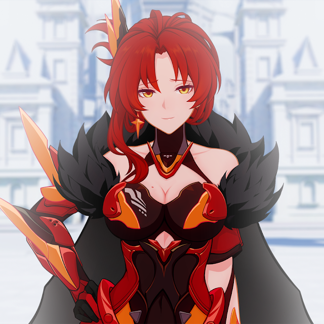

Натлан – Вогняне Королівство
Геймплейні механіки
- Висока взаємодія з Піро-реакціями: У Натлані гравці зможуть активно взаємодіяти з Піро-реакціями, такими як Запалювання, Плавлення та Спалах. Використання цих механік дозволяє створювати потужні атаки, що ведуть до швидкої перемоги над ворогами. Піро-реакції можуть бути комбінацією з іншими елементами для посилення ефектів.
- Можливість дуелей та бойових арен: Однією з головних особливостей Натлана є система дуелей та бойових арен, де гравці можуть випробувати свої сили в протистоянні з іншими. Це місце, де всі найкращі воїни регіону змагаються один з одним, проявляючи не лише фізичну силу, а й майстерність вогняної магії.
- Спеціальна бойова система з використанням вогняної магії: Гравці можуть використовувати спеціальну бойову систему, де вогняні закляття поєднуються з блискавичними атаками та захисними маневрами, дозволяючи гравцям створювати непереможні стратегії для боротьби з ворогами.
- Арена Вогняних Воїнів: Це особливий місце в Натлані, де можна змагатися з іншими гравцями або NPC в екстремальних умовах, де на кожному кроці чекають випробування: злісні вогняні звірі, а також сильні вороги, які вміло використовують Піро-реакції.
Цікаві факти
- Натлан має вплив культури Латинської Америки: Архітектура, музика та звичаї Натлану натхненні культурами Латинської Америки. Яскраві кольори будівель, виразні танці та музика на площах створюють атмосферу, що одразу захоплює.
- Архонт веде воїнів у полум'яному танці: Мавуіка відома своїми танцями на полі бою, які зачаровують ворогів та підвищують мораль її солдатів. Її танець — це не просто ритуал, а й потужна магічна дія, яка може сприяти перемозі.
- Легенди про Вогняних Володарів: У Натлані ходять легенди про Вогняних Володарів, могутніх воїнів, які отримали свої сили від самого Архонта і стали невразливими у бою завдяки поєднанню бойових мистецтв та вогняної магії.
- Вогняні свята та ритуали: Жителі Натлану щорічно проводять великий фестиваль вогню, де сотні тисяч людей зібраються, щоб вшанувати Архонта та її бойовий дух. Свято включає яскраві танці, битви, демонстрації магії та незабутні вогняні шоу.
- Вогняні звірі і природні небезпеки: Натлан не тільки вражає своїми людьми, але й живими істотами. Тут зустрічаються рідкісні вогняні звірі, з якими потрібно бути обережними. Вогняні бурі та землетруси є звичними природними явищами, і їх потрібно враховувати при дослідженні цього регіону.
- Вогняний Лабіринт: У Натлані існує таємничий Вогняний Лабіринт, де дослідники та шукачі пригод можуть знайти стародавні артефакти та магічні предмети. Але, щоб пройти лабіринт, потрібно вміти правильно керувати вогнем, тому лише найсміливіші й найвправніші можуть досягти мети.
Піро Архонт - Мурата
Мурата, хоча й є духовним лідером, також дуже впливає на політичне життя Натлана. Вона відома своєю глибокою відданістю бойовому мистецтву, а також особливою здатністю втілювати силу вогню в кожній битві, яку вона веде. Її стратегічні здібності дозволяють Натлану не лише залишатися вогняним королівством, а й досягати великих перемог у війнах.

На головну сторінку